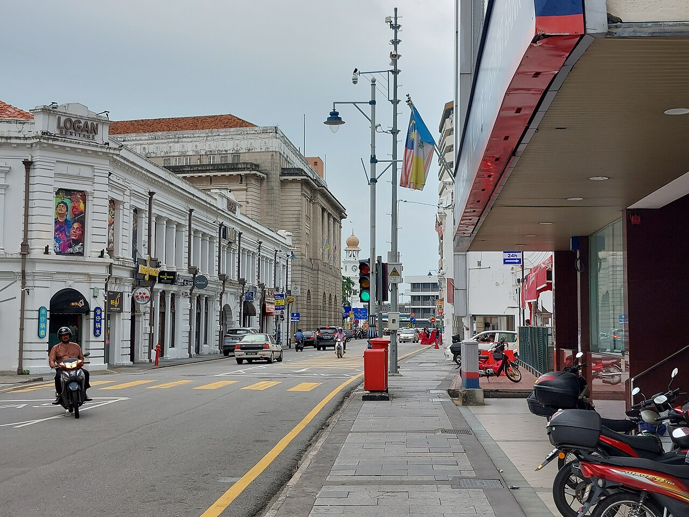
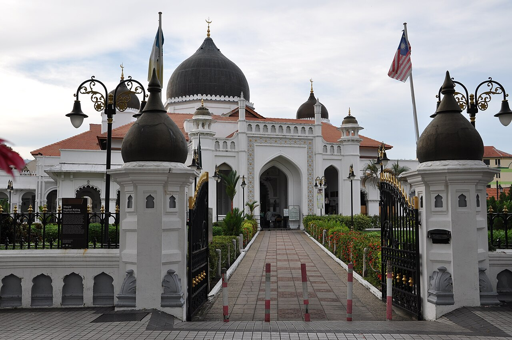
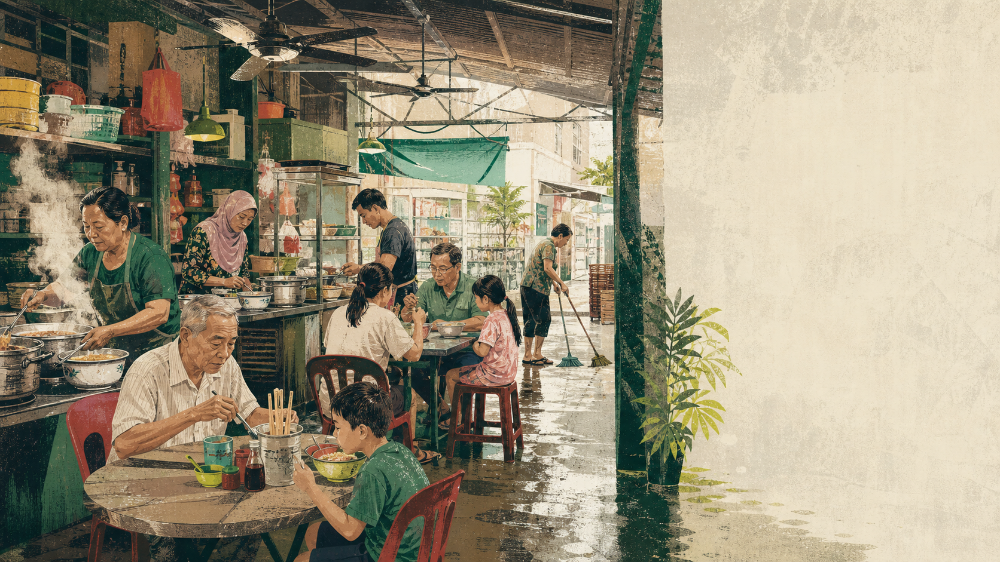

A field deck for Penang
Not a list of dishes. A way to read a port city through what arrived, what mixed, what is worshipped, and what may not survive.
15 scenes · 10 sources · built 26 Jul 2026Photo: C.W. Tan / Wikimedia Commons · CC0
The whole idea
George Town's living heritage grew from a trading port linking Europe, the Middle East, the Indian subcontinent, the Malay Archipelago, and China.1 checked
A useful mental map

The heritage core and buffer zones contain 5,013 buildings and 37 functioning places of worship.2 checked
Research output 01 · tap the menu
Tap a dish. The point is not who “invented” it; the point is which routes, workers and techniques became ordinary.
Research output 02 · observation protocol

Who owns the table, and who only owns the bowl?
Which stall takes payment, and when?
Who orders with words, fingers, memory or eye contact?
What changes between breakfast, rain, lunch and closing?
The repeat visit is the method: same coffee, different hour.
Research output 03 · belief as infrastructure
During Hungry Ghost observances, temporary stages may be built and the front row left vacant for an invisible audience.4 reported
Stay out of the empty front row. Ask before photographing people or offerings. Observe first; interpretation can wait.
Research output 04 · the contradiction
buildings in the protected core and buffer zones
of hawkers in one 2019 study had a definite successor.5 sampled
A city can protect every building and still lose the practices the buildings were made to hold. interpretation
Research output 05 · payment reality
Research output 06 · hostel as social layer
The useful loop is contact in the evening, the city during the day, and enough sleep to return tomorrow. recommendation
A 26 July 2026 EZ Social listing snapshot combined a large review base with common space, group food outings, lockers, and quiet after midnight.8 reported · moving Re-read the newest reviews before booking.
Research output 07 · three possible trips
George Town base. One Penang Hill/Air Itam spoke. One open day. Repeat two breakfasts.
George Town base. Air Itam, a north-coast village day, and enough empty space to revisit a street after rain.
One base, three spokes, two fully unplanned days, and the chance to notice which place you keep returning to.
One George Town base plus a few outward spokes lets repeated mornings create recognition while day trips correct the postcard. recommendation
Research output 08 · season as texture
Northwestern Peninsular Malaysia generally has two wetter and two lower-rainfall periods.9 climatology
This is not a forecast. In a food city, an afternoon storm can be a chapter break.
Research output 09 · culture shelf
Zen Cho · family, spirits and gangsters against Penang.10 checked
A field companion for names, buildings, and the stories hiding in plain sight.
Language as evidence that a port does not merely import culture; it makes local forms.
Research output 10 · practical friction
Keep your bag away from the road side; motorbike theft is a documented risk.11 checked · moving
Do not assume a crossing controls traffic; riders may not stop.12 checked · moving
Carry some cash even if the QR stickers make that feel silly.
Cover shoulders and knees when a place of worship asks; follow the entrance signs.
The question to carry
Eat first. Then trace the ingredients, labour, worship, rent, weather and family memory that keep the meal possible.
That question is better than “Have I seen everything?”
Transparent grounding
Facts are checked, dated, and separated from interpretation. “Moving” claims should be reopened before booking.
checked primary or credible source · reported weaker or sampled evidence · moving date-sensitive · interpretation deliberately unsourced synthesis
George Town's living heritage grew from a trading port linking Europe, the Middle East, the Indian subcontinent, the Malay Archipelago, and China.
tier A George Town UNESCO World Heritage Site · George Town World Heritage Incorporated
their former function as trading ports linking East and West
The World Heritage core and buffer zones contain 5,013 buildings and 37 functioning places of worship.
tier A George Town UNESCO World Heritage Site · George Town World Heritage Incorporated
There are 37 places of worship, mainly mosques, Chinese temples, Indian temples and churches, within the core and buffer zones of George Town.
Only 21% of hawkers interviewed in a 2019 Penang Institute study had a definitive succession plan.
tier B Making Food Hawking in Penang Sustainable · Penang Institute
only 21% of those interviewed in our study have a definitive succession plan
Zen Cho's Black Water Sister is a contemporary fantasy set against Penang, moving through family, spirits, and gangsters.
tier A Black Water Sister · Penguin Random House
Set in the backdrop of Penang, Jess reunites with her extended family and navigates a world of spirits and gangsters.
PayNet reported more than 2.9 million DuitNow QR merchants across Malaysia in February 2026.
tier A PayNet and NPCI International Enable Cross-Border QR Payments · Payments Network Malaysia
There are more than 2.9 million DuitNow QR merchants across Malaysia
Nasi kandar carries a Tamil-Muslim migration and labour history; its name refers to rice baskets balanced on a shoulder pole.
tier B Nasi kandar · Penang Global Tourism
Nasi kandar is associated with Tamil Muslim immigrant vendors in colonial Penang. The name refers to rice carried in baskets balanced with a shoulder pole.
As captured on 26 July 2026, Hostelworld's EZ Social listing combined a large review base with common space, group food outings, lockers, and quiet after midnight.
tier C EZ Social Hostel Georgetown listing snapshot · Hostelworld
The listing described a common room, social balcony, security lockers, a rooftop or bar, daily activities, group food outings, and quiet after midnight.
PayNet and NPCI signed a phased agreement in February 2026; the announcement did not say that Indian UPI was already live at Malaysian DuitNow QR points.
tier A PayNet and NPCI International Enable Cross-Border QR Payments · Payments Network Malaysia
The initiative will be rolled out in two phases
In northwestern Peninsular Malaysia, climatological rainfall peaks generally occur around October-November and April-May, with lower periods around January-February and June-July.
tier A Malaysia's Climate · Malaysian Meteorological Department
The primary maximum generally occurs in October - November while the secondary maximum generally occurs in April - May.
tier A Malaysia's Climate · Malaysian Meteorological Department
the primary minimum occurs in January - February and the secondary minimum occurs in June - July
During Penang's Hungry Ghost observances, temporary stages may be built and front-row seats left vacant for an invisible audience.
tier B Hungry Ghost Festival in Penang · Penang Global Tourism
the front row audience seats are left vacant for
these invisible (but thoroughly present, according to believers) guests
Malaysia travel advice warns that motorbike thieves can target bags carried on the shoulder closest to the road.
tier A Malaysia safety and security · UK Foreign, Commonwealth & Development Office
Thieves on motorbikes can target tourists. They can cut straps or pull off bags carried on the shoulder closest to the road.
Drivers, especially motorbike riders, may not stop at traffic lights or pedestrian crossings.
tier A Malaysia safety and security · UK Foreign, Commonwealth & Development Office
Drivers, particularly motorbike riders, do not always stop at traffic lights or pedestrian crossings.
A city can protect every building and still lose the practices the buildings were made to hold.
The useful hostel loop is contact in the evening, the city during the day, and enough sleep to return to the same breakfast place tomorrow.
The strongest trip shape is one George Town base with a few outward spokes, because repeated mornings create recognition while day trips correct the heritage-core postcard.